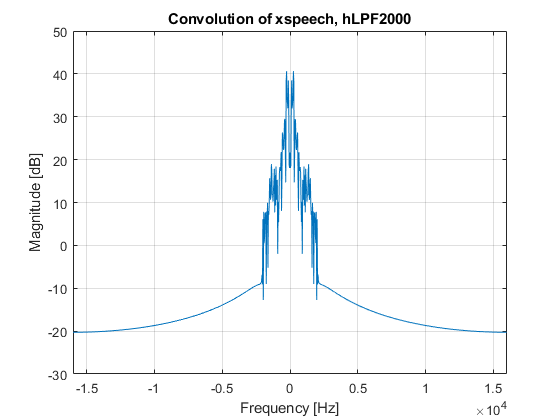

Mohib Khan
Contents
B.1
load('Lab4_Data.mat'); figure(1) plot(xspeech) title('xspeech'); figure(2) MagSpect(hChannel) title('hChannel frequency domain'); figure(3) MagSpect(hLPF2000) title('hLPF2000 frequency domain'); figure(4) MagSpect(hLPF2500) title('hLPF2500 frequency domain');
Encoder
conv1 = conv(xspeech, hLPF2000); figure(5) MagSpect(conv1) title('Convolution of xspeech, hLPF2000'); carrier = osc(6000,80710,32000); figure(6) plot(carrier) title('Carrier Signal'); Mod = conv1.*carrier; figure(7) MagSpect(Mod) title('Modulated Signal Frequency Domain'); Output = conv(Mod, hChannel); figure(8) MagSpect(Output) title('Encoded Signal Frequency Domain');
Decoder
carrier2 = osc(6000,81520,32000); figure(9) plot(carrier2) title('Carrier Signal #2'); Demod = Output.*carrier2; figure(10) MagSpect(Demod) title('Demodulated Signal Frequency Domain'); recover_xspeech = conv(Demod, hLPF2500); figure(11) plot(recover_xspeech) title('Decoded Signal'); figure(12) MagSpect(recover_xspeech) sound(recover_xspeech,32000) title('Decoded Signal Frequency Domain'); %The purpose of this code was to take a given audio file and encode it %using given functions and waves. Furthermore, it was to decode the encoded %signal to retrieve the original audio file. The steps I took to encode the %signal were the following: First, I convoluted the audio file with a low %pass filter to remove higher frequencies that were not needed. Second, I %multiplied the convoluted signal with a carrier signal produced by the %osc.m function. This allows the audio to be easily transmitted. Finally, %the product was convoluted with the hChannel to get the final encoded %signal. %The steps I took to decode the signal were: First, multiply the signal %with a carrier signal which prepares it for the next step. Next, I %convoluted the result with the other low pass filter to cut off the higher %frequencies and gain the final result.

B demo
%Steps to run the code: %1. Click the "Open" icon in the top left of Matlab and open the B.m file. %2. Click "Run" under the "Editor" tab at the top of Matlab. %3. Review the graphs that pop up and read the comments in the section %above. %File B.m is used to implement the encoder and decoder. It first encodes %the audio file using the hLPF2000 low pass filter, a carrier signal %generated by the osc.m file and, the hChannel signal. It then takes the %encoded signal and decodes it using another carrier signal generated by %the osc.m file and, the hLPF25000 low pass filter. Finally, it plays the %final audio file.